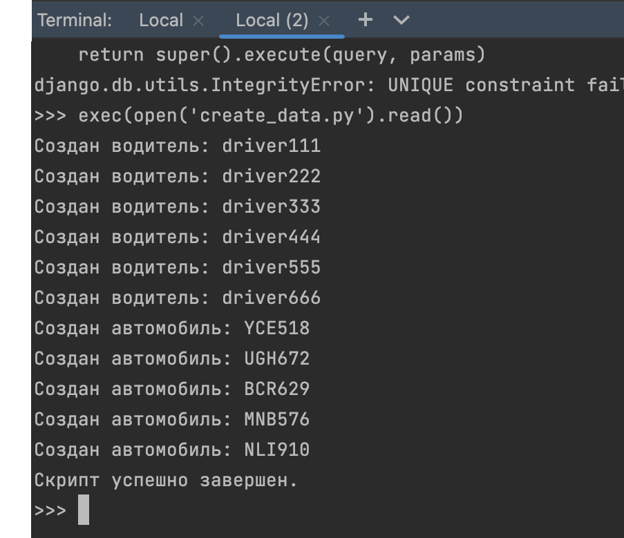
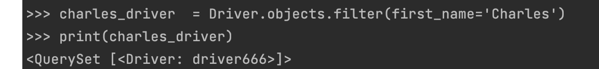
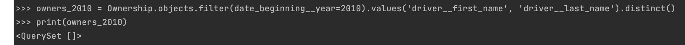
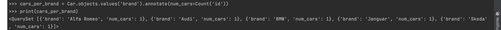

Practice3
Практика 3.1
Напишите запрос на создание 6-7 новых автовладельцев и 5-6 автомобилей, каждому автовладельцу назначьте удостоверение и от 1 до 3 автомобилей. Задание можете выполнить либо в интерактивном режиме интерпретатора, либо в отдельном python-файле. Результатом должны стать запросы и отображение созданных объектов.
Скрипт create_data.py, размещаем его рядом с manage.py:
from django.utils import timezone
from project_first_app.models import Driver, DriverLicence, Car, Ownership
drivers_data = [
{"username": "driver111", "last_name": "Russell", "first_name": "George", "date_of_birth": timezone.now()},
{"username": "driver222", "last_name": "Rodríguez", "first_name": "Ricardo", "date_of_birth": timezone.now()},
{"username": "driver333", "last_name": "Sainz", "first_name": "Carlos", "date_of_birth": timezone.now()},
{"username": "driver444", "last_name": "Hamilton", "first_name": "Lewis", "date_of_birth": timezone.now()},
{"username": "driver555", "last_name": "Marko", "first_name": "Helmut", "date_of_birth": timezone.now()},
{"username": "driver666", "last_name": "Leclerc", "first_name": "Charles", "date_of_birth": timezone.now()},
]
created_drivers = []
for data in drivers_data:
driver = Driver.objects.create_user(**data)
created_drivers.append(driver)
print(f"Создан водитель: {driver.username}")
# Создаем автомобили
cars_data = [
{"number": "YCE518", "brand": "BMW", "car_model": "7 Series", "color": "Black"},
{"number": "UGH672", "brand": "Janguar", "car_model": "XJ", "color": "Blue"},
{"number": "BCR629", "brand": "Skoda", "car_model": "Felicia", "color": "Pink"},
{"number": "MNB576", "brand": "Alfa Romeo", "car_model": "Giulia", "color": "Black"},
{"number": "NLI910", "brand": "Audi", "car_model": "R8", "color": "Yellow"},
]
created_cars = []
for data in cars_data:
car = Car.objects.create(**data)
created_cars.append(car)
print(f"Создан автомобиль: {car.number}")
# Создаем водительские удостоверения
licences_data = [
{"owner": driver, "number": str(i + 1), "licence_type": chr(ord("A") + i), "date_of_release": timezone.now()}
for i, driver in enumerate(created_drivers)
]
for data in licences_data:
DriverLicence.objects.create(**data)
# Создаем владение
ownership_data = [
{"driver": driver, "car": car, "date_beginning": timezone.now(), "date_end": timezone.now()}
for driver, car in zip(created_drivers, created_cars)
]
for data in ownership_data:
Ownership.objects.create(**data)
print("Скрипт успешно завершен.")
Результаты выполнения:
Таблицы до выполнения скрипта:

Выполнение скрипта в python3 manage.py shell: 
Таблицы после выполнения скрипта:

Практика 3.2
По созданным в пр.1 данным написать следующие запросы на фильтрацию:
Выведете все машины марки “BMW”:
cars = Car.objects.filter(brand='BMW')

Найти всех водителей с именем “Charles”:
charles_drivers = Driver.objects.filter(user__first_name='Charles')

Взяв любого случайного владельца получить его id, и по этому id получить экземпляр удостоверения в виде объекта модели:
import random
random_owner = Driver.objects.all().order_by('?').first()
driver_licence = DriverLicence.objects.get(owner=random_owner)

Вывести всех владельцев красных машин:
blue_car_owners = Ownership.objects.filter(car__color='Blue').values('driver__first_name', 'driver__last_name').distinct()

Найти всех владельцев, чей год владения машиной начинается с 2010:
owners_2010 = Ownership.objects.filter(date_beginning__year=2010).values('driver__first_name', 'driver__last_name').distinct()

Практика 3.3
Необходимо реализовать следующие запросы c применением описанных методов:
Вывод даты выдачи самого старшего водительского удостоверения:
oldest_license_date = DriverLicence.objects.order_by('date_of_release').values('date_of_release').first()

Укажите самую позднюю дату владения машиной, имеющую какую-то из существующих моделей в вашей базе:
latest_ownership_date = Ownership.objects.exclude(date_end=None).order_by('-date_end').values('date_end').first()

Выведите количество машин для каждого водителя:
from django.db.models import Count
cars_per_driver = Ownership.objects.values('driver__first_name', 'driver__last_name').annotate(num_cars=Count('car'))
Подсчитайте количество машин каждой марки:
cars_per_brand = Car.objects.values('brand').annotate(num_cars=Count('id'))

Отсортируйте всех автовладельцев по дате выдачи удостоверения:
sorted_drivers = Driver.objects.order_by('driverlicence__date_of_release').distinct()